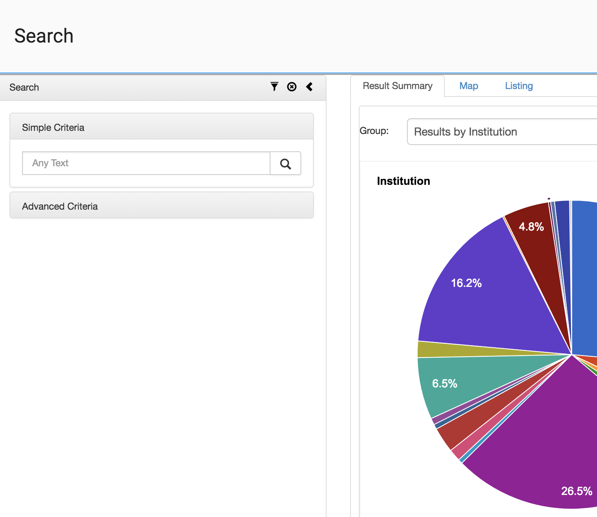

SAEON maintains an aggregated metadatabase, generally referencing standardised data services. Traditional spatial data typically use ISO 19115 or SANS 1878 schema for the metadata, and Open GeoSpatial Consortium Open Web Services to provide standarides interfaces to the data.
The SAEON Open Data Platform spatial metadatabase is searchable through web applications or standard service interfaces. The web application, shown here, allows one to search on the basis of simple keyword phrases, or to compose queries based on temporal, spatial, and topical elements of metadata.
Results are shown by default as a chart, summrising the scope of the metadata found. Results can also be shown on a cluster map or as a listing. Listings can be used to obtain additional metadata, or to preview, access, and download the data.
Try some examples: